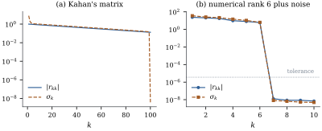

10.7 Rank-revealing factorizations
A model matrix with an intercept and indicators for every level of a factor has dependent, or aliased, columns. Software must notice them and decide which to set aside, but in floating point it can only ask whether a column is nearly a combination of others, relative to a tolerance. The SVD answers that (Section 10.4) but does not say which columns to drop, and it costs more. The standard tool is QR with column pivoting.
10.7.1. QR with column pivoting
At step
If
Proof. Write
Let
(a) For every
(b) For every
(c) In exact arithmetic, if
(d) The cost is that of the unpivoted factorization,
Proof.
(a) Reflections preserve the length of each column segment they act on. When column
(b)
(c) Because
(d) The norms of the trailing column segments are updated at each step by subtracting
Part (b) is the rank-revealing property, and it is
one-sided. A small pivot
Kahan (1966) gave the upper triangular matrix with
diagonal

import numpy as np
import statsmodels.api as sm
def pivoted_qr(X):
"""Householder QR with column pivoting: X[:, perm] = Q R, |r_11| >= |r_22| >= ..."""
A = np.array(X, dtype=float)
n, p = A.shape
perm = np.arange(p)
for k in range(min(n, p)):
norms = np.sum(A[k:, k:] ** 2, axis=0) # squared norms of the trailing columns
j = k + int(np.argmax(norms))
A[:, [k, j]], perm[[k, j]] = A[:, [j, k]], perm[[j, k]]
x = A[k:, k]
alpha = -np.copysign(np.linalg.norm(x), x[0])
if alpha == 0.0:
break # the trailing block is exactly zero
v = x.copy()
v[0] -= alpha
v /= np.linalg.norm(v)
A[k:, k:] -= 2.0 * np.outer(v, v @ A[k:, k:])
return np.triu(A[:p, :]), perm
def numerical_rank(R, tol):
"""Number of diagonal entries of the pivoted triangle above tol * |r_11|."""
d = np.abs(np.diag(R))
return int(np.sum(d > tol * d[0]))m, c = 100, 0.2
sn = np.sqrt(1 - c ** 2)
K = np.diag(sn ** np.arange(m)) @ (np.eye(m) - c * np.triu(np.ones((m, m)), 1))
K = K @ np.diag(1 - 1e-10 * np.arange(m)) # tiny tilt so that pivoting keeps the order
RK, permK = pivoted_qr(K)
sK = np.linalg.svd(K, compute_uv=False)
print("pivot order unchanged:", np.array_equal(permK, np.arange(m)))
print(f"smallest |r_kk| = {np.abs(RK[-1, -1]):.3f}, smallest singular value = {sK[-1]:.2e}")10.7.2. Basic solutions and aliased columns
Suppose pivoted QR finds numerical rank
Software differs in the choice. R’s lm
takes the columns in order, moves to the end any column
whose remaining norm falls below a relative tolerance
(by default NA. statsmodels’
OLS uses the pseudoinverse and so reports
the minimum-norm solution. Programs built on the sweep
operator (Proposition 10.2.3),
such as SAS’s GLM procedure, skip numerically zero
pivots and set those coefficients to zero, another basic
solution.
Grunfeld’s investment data (
gr = sm.datasets.grunfeld.load_pandas().data
firms = list(dict.fromkeys(gr["firm"]))
D = np.column_stack([(gr["firm"] == f).to_numpy(float) for f in firms]) # 11 indicators
y = gr["invest"].to_numpy()
X = np.column_stack([np.ones(len(y)), gr[["value", "capital"]], D]) # 14 columns, rank 13
n, p = X.shape
R, perm = pivoted_qr(X)
r = numerical_rank(R, 1e-10)
print("p =", p, " numerical rank =", r, " column left out:", perm[r:])def basic_solution(X, y, tol=1e-10):
"""Drop the columns that pivoted QR puts last; fit the rest (zeros for dropped columns)."""
R, perm = pivoted_qr(X)
r = numerical_rank(R, tol)
b = np.zeros(X.shape[1])
b[perm[:r]] = np.linalg.lstsq(X[:, perm[:r]], y, rcond=None)[0]
return b
def in_order_solution(X, y, tol=1e-7):
"""Keep a column only if it is not (nearly) a combination of the columns kept before it."""
kept = []
for j in range(X.shape[1]):
Z = X[:, kept + [j]]
Q, R = np.linalg.qr(Z)
if abs(R[-1, -1]) > tol * np.linalg.norm(X[:, j]):
kept.append(j)
b = np.full(X.shape[1], np.nan) # aliased coefficients reported as missing
b[kept] = np.linalg.lstsq(X[:, kept], y, rcond=None)[0]
return b
solutions = {
"minimum norm (pinv)": np.linalg.pinv(X) @ y,
"pivoted QR, basic": basic_solution(X, y),
"in order, aliased = NA": in_order_solution(X, y),
}
for name, b in solutions.items():
fitted = X @ np.nan_to_num(b)
print(f"{name:24s} value {b[1]:.5f} capital {b[2]:.5f} const {b[0]:9.3f}"
f" GM - US Steel {b[3] - b[4]:9.3f} SSE {np.sum((y - fitted) ** 2):.1f}")10.7.3. Choosing a tolerance
Exact aliasing, as in the example, is easy: the offending pivot is at the level of rounding error, far below any reasonable tolerance. The hard case is a column that is nearly, but not exactly, a combination of others. The numerical rank then depends on the tolerance, and so do the coefficients, dramatically.
Add to the Grunfeld regressors (intercept, value,
capital) a fourth column equal to value plus capital
plus noise of relative size numpy.linalg.lstsq,
rng = np.random.default_rng(108)
z = X[:, 1] + X[:, 2] + 1e-9 * np.linalg.norm(X[:, 1]) * rng.normal(size=n) / np.sqrt(n)
Xz = np.column_stack([X[:, :3], z]) # constant, value, capital, value + capital + tiny
s = np.linalg.svd(Xz, compute_uv=False)
print("relative singular values:", np.array2string(s / s[0], precision=2))
for tol in [None, 1e-8]:
b, _, rank, _ = np.linalg.lstsq(Xz, y, rcond=tol)
print(f"rcond = {tol}: rank {rank}, largest |b_j| = {np.abs(b).max():.3g},"
f" SSE = {np.sum((y - Xz @ b) ** 2):.1f}")Neither answer is wrong as arithmetic. But a column
that differs from a combination of the others only at
the level of
Idea. Pivoted QR brings the most independent columns to the front. A small trailing pivot proves a near dependence, and setting those coefficients aside changes nothing estimable. The tolerance that decides “small” is a statement about the accuracy of the data.
10.7.4. Exercises
A. Check your understanding
Apply column-pivoted QR (Theorem 10.7.2) by
hand to the matrix with columns
Solution. The norms are
B. Practice
In the setting of this section, show that the basic
solution and the minimum-norm solution have the same
fitted values. Show that the minimum-norm solution is
orthogonal to
Solution. Both satisfy
Show that
C. Going deeper
For Kahan’s matrix